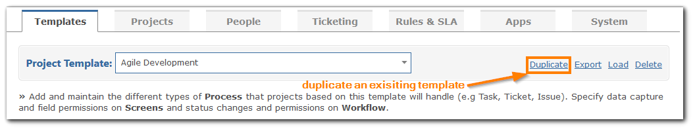
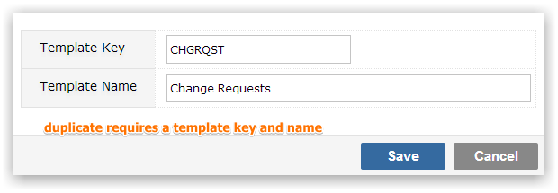
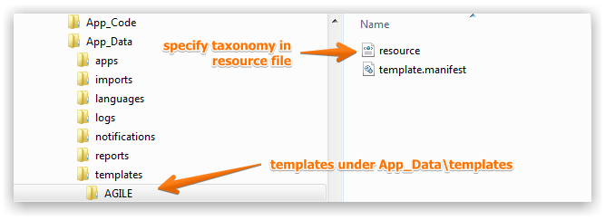

Project Templates allow you to control almost all the metadata related to a specific use, separating process, workflow and taxonomy across projects or individual processes within a single application instance. Creating Templates from scratch is a technical process and it is strongly recommended that you always create a new Template by duplicating an existing Template, using the Duplicate link at the top right of the Template page and then modifying the resulting Template.

To duplicate an existing Template use the Duplicate link at the top right of the Template page. You will be prompted for a Template Key and a Template Name.

Once you have created a duplicate of your Template you may modify it to add, delete or change any of the template metadata, including the Processes it tracks, Screens, Workflow, Status, Menu etc.
Your duplicate Template will have two new folders created for it, one containing the Template metadata (including the resource.xml file where you can rename any Gemini fields) and one containing the images that are used in the Template. The Template metadata is contained in the Templates folder, which is a sub folder of the App Data folder on the web server. The images for the Template are contained in the Images\Meta folder, which reside under Assets folder on the web server.

TipThe Template Name is what will be displayed on all screens that reference them, so do not create a scenario where, for example, you have the Template Keys HDSK1 and HDSK2 with the identical name 'Help Desk' as you will not always be shown the key to be able to easily make a distinction between the two.